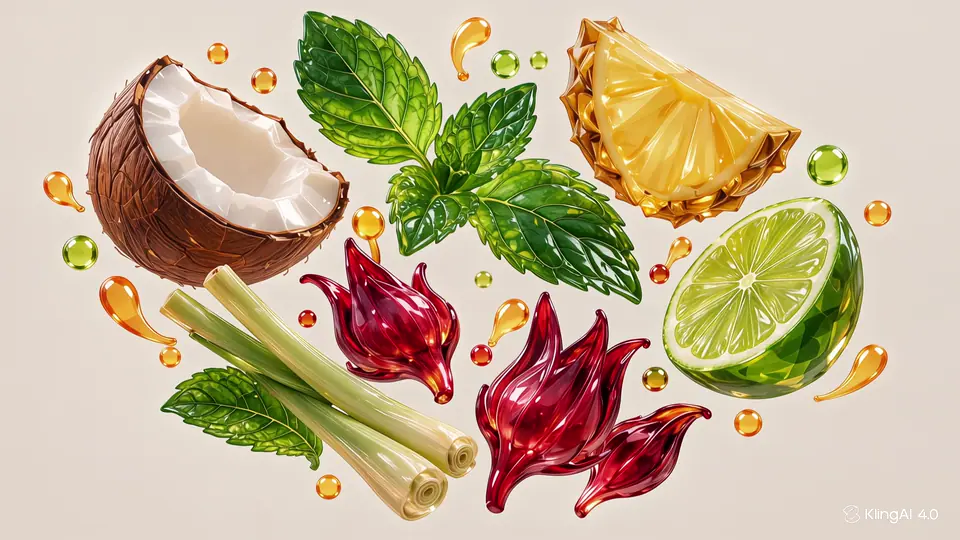

Recognise
Every ingredient remains in the composition.
Kling source / scroll test
This pass preserves every visible ingredient, leaf, ribbon, droplet, glass and garnish from the supplied Kling generation. Scroll to scrub the 20-second source.

Every ingredient remains in the composition.
Colours and botanical forms begin to flow.
The glossy ribbon becomes the subject.
Liquid folds into the clear glass.
The finished drink holds on screen.
Source review. The original Kling export is preserved in the source folder. The browser copy removes its audio track for a silent scroll experience, but keeps the visible Kling watermark and all visual elements.